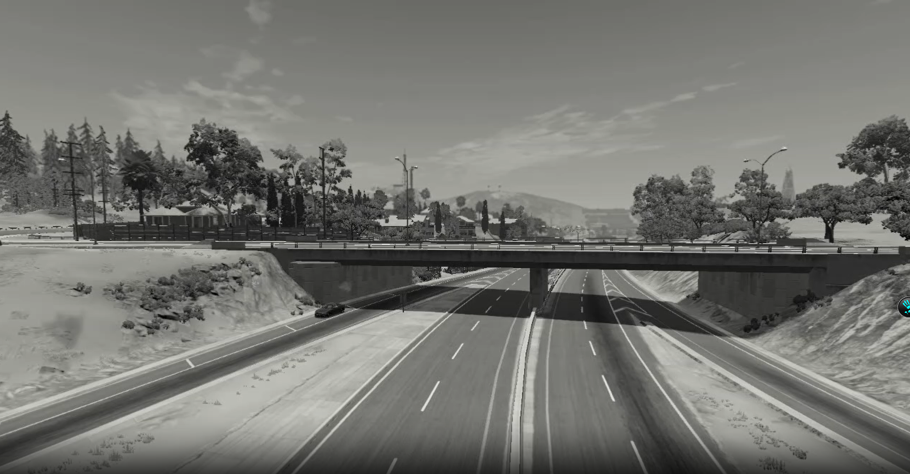

Цепная реакция на Brittlebush St: от ETK до Gavril T Series
Запись с камеры видеонаблюдения. Видео: полная цепь столкновений на Brittlebush St (Exit 21).

Кадр до аварии: ETK K Series спокойно стоит. Через 3 секунды — падение.
В районе Brittlebush St (Exit 21) произошла каскадная авария: грузовик Spree упал на ETK K Series, вызвав цепную реакцию с участием Ibishu Covet, BX Series, Bruckell Legran и Gavril T Series.
Данные с места:
- Сломано: 7 манекенов (1+1+4+1)
- Пострадавших: 2 манекена
- Заваривание: отменено
- Полиция: не прибыла (занята на пожаре у башни Mawer)

Последствия. Видно все пять автомобилей в цепи столкновений.
Видео и фото переданы в редакцию Belasco Daily анонимным очевидцем. Движение восстановлено к 17:00.